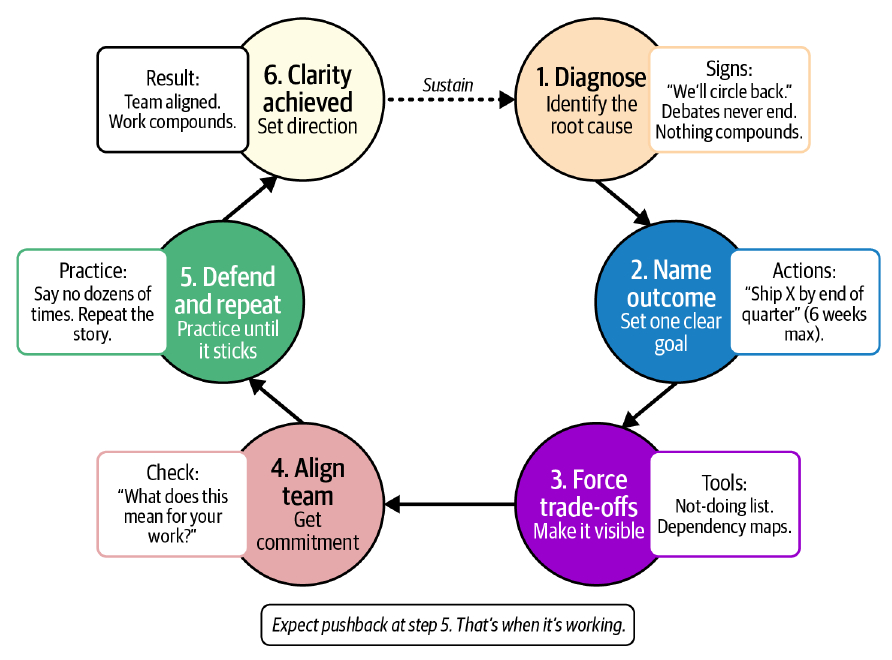

Chapter 5 · pp. 75–92
Setting Direction
Engineering Leadership: The Hard Parts, First Edition
Leaders rarely inherit too little work; they inherit a wall of "critical" priorities. The chapter's central story is Juan's Stripe LATAM team: 30 competing priorities, a team saying yes to everything, and a virtual leadership off-site in 2020 that cut them to six — two per team — after which work started compounding. The authors call the alternative drift: motion without meaning, which looks busy from outside and quietly hollows out a team. They give a drift diagnostic (Table 5-1), the traps that cause it, the leader's job as a "lighthouse," practices for alignment that is commitment rather than agreement, and how to change plans while keeping the story intact. The refrain: clarity isn't extra work; clarity is the work (pp. 75–92).
The chapter’s own outline (from the book’s table of contents)
- What Causes Drift — p. 76
- The Drift Diagnostic — p. 77
- The Silent Cost of Drift — p. 78
- What Good Direction Looks Like — p. 79
- Traps That Cause Drift — p. 81
- No Clear Inputs — p. 81
- Too Many Inputs — p. 81
- Hesitant Leadership — p. 82
- Reactive Roadmaps and Consensus Traps — p. 82
- Be the Lighthouse — p. 83
- Creating Alignment — p. 84
- Why Alignment Breaks — p. 85
- Alignment Is Not Agreement — p. 85
- How Leaders Create Alignment — p. 86
- Adapting Without Losing the Plot — p. 87
- If the Plan Changes, the Story Stays Intact — p. 88
- Clarity Is the Work — p. 88
- Reflection — p. 90
- Conclusion: Pulling It All Together — p. 91
From the book
Introduction
When Juan led Stripe's LATAM engineering team, headlines spoke of expansion; inside, a growing team faced 30 competing priorities — supporting customers and deployments, exploring three new countries, regulatory compliance in Mexico and Brazil, launching local payment methods like OXXO and Boleto, company-wide security work — and said yes to everything (p. 75). Senior engineers stopped making bold architectural choices; juniors optimized for getting through code review (p. 75). At a virtual leadership off-site in 2020, engineering, product, operations and legal put all 30 on the table and made trade-offs explicit; within 60 days there were six priorities, two per team. Engineers had permission to say no, meetings got shorter, and work compounded (p. 76). Chaos doesn't end with more people or more process; it ends when you set direction (p. 76).
From the book
What Causes Drift
Drift begins with good intentions: keeping options open, testing both approaches instead of choosing, splitting the difference on an architectural bet. The first symptom is language — "Let's align on this," "We'll circle back," "We're still figuring out the details" — meaning nobody owns the decision (p. 76). It accelerates when trade-offs go "underground": sales promises a feature, an executive drops a "quick idea" in Slack, legal escalates — each sensible, but nobody asks what stops to make room. Engineers shift from "Why does this matter?" to "Which fires do I put out today?" (p. 77)
In Practice: April's Story (p. 77). A senior StudioOps engineer tells April he used to care about architecture but now just cares about getting through code review — not cynicism, but adaptation to drift.
| Table 5-1. The drift diagnostic (p. 77) | Root cause | Immediate action | Sustained practice |
|---|---|---|---|
| People say "We'll circle back," but never do | Too many competing priorities, no clear focus | Choose one main goal for the next six weeks | Track all work visibly; untracked work gets deprioritized |
| Teams constantly ask "What should we work on first?" | Leadership avoiding tough priority calls | Make a clear priority decision and explain your reasoning | Communicate priorities repeatedly until the message sticks |
| Work gets completed but doesn't build toward anything | Reacting to whatever seems urgent instead of following a plan | Create an explicit "stop doing" list | Review every meeting's purpose before it happens |
| The best team members start looking elsewhere | Important decisions stuck because everyone needs to agree | Share regular updates on what you're building and why | Create safe ways to disagree and ask hard questions |
| The same arguments resurface in every planning session | Decisions made without acknowledging what's given up | Name what you're not doing | Follow up after decisions to keep commitment strong |
Two or more signs from the first column mean the team has lost focus; choose one immediate action and do it this week (p. 78).
Try it
Drift diagnostic
Open full screen ↗ · the simulation is the vault’s own model of the mechanism the book describes.
From the book
The Silent Cost of Drift
Drift looks busy — tickets closing, demos scheduled, full standups — while urgency has replaced clarity and effort no longer compounds (p. 78). It compounds instead: every unclear trade-off doubles the work, every abandoned priority leaves damage. Execution slows, decisions don't stick, engineers stop taking initiative, product managers optimize for marketing, and top performers burn out first (p. 78). At Stripe LATAM, engineers wrote regulatory documentation that might not matter and built integrations that stalled when partnerships changed; designers shipped whatever would be approved; managers counted tickets. People quit "piece by piece" (pp. 78–79).
In Practice: April's Story (p. 79). Two senior engineers had quietly left PixelCurl the previous quarter; juniors stopped asking questions in standups; a designer now just waits to be told what to build.
The damage is to people, not just time — but even a little clarity can flip a team's energy (p. 79).
From the book
What Good Direction Looks Like
If drift is motion without meaning, direction is focus with momentum (p. 79). When Stripe LATAM narrowed to OXXO in Mexico and Boleto in Brazil, everyone's posture changed (pp. 79–81):
| Who | Before | After |
|---|---|---|
| Senior engineers | Debate felt endless — why sharpen work that may be dropped? | Pushback welcomed; trade-offs understood |
| Junior engineers | Coding tickets into a void | Saw how work connected to Mexico and Brazil; learned faster |
| Product managers | Jockeying to get features approved before priorities changed | Aligned with engineers; could say no and trust decisions |
| Team leads | Refereeing every trade-off | Teams made smart calls with context |
| Language | "We'll just get something out" | "If we add this scope, we'll miss the Brazil deadline" |
Clarity feels like a constraint but is freedom; the Boleto decision — basic payments first, enhancements later — made limits explicit. You don't need agreement, only commitment once the decision is made (p. 80).
From the book
Traps That Cause Drift
| Trap | What it looks like | The way out (pp. 81–83) |
|---|---|---|
| No clear inputs | No real strategy, or a 40-slide deck that commits to nothing; at Stripe, competing signals from customers, expansion research and regulators | Set a local, even temporary, mission: "Here's what matters for the next six weeks" |
| Too many inputs | A backlog that's "a landfill of competing urgencies" — 30 "critical" priorities | Write everything down and choose: dependency maps and "not doing" lists show every yes has a cost |
| Hesitant leadership | Leaders see the chaos but wait for certainty; it feels like keeping options open, to engineers like abandonment | Clarity doesn't require certainty: make the call, explain why, own it |
| Reactive roadmaps | Roadmaps shift with each escalation; teams follow the loudest voice | Anchor to outcomes ("Improve reliability by 50%," "Onboard 1,000 merchants") and measure every request against them |
| Consensus traps | Waiting until everyone agrees; endless debate | Debate until the decision, then support it — the Mexico/Brazil focus wasn't unanimous, but everyone committed |
From the book
Be the Lighthouse
Once drift has set in, teams need a fixed point (p. 83). Its signs are quiet: "refine it next sprint," "We'll know more once we ship," "this came from the top" used to end debate; a backlog where nothing is evaluated against a single outcome; ambition limited to what survives review (p. 83). The answer is not a strategy deck but a clear outcome and a short horizon, defended for months (p. 83).
Boleto circled for months under reasonable requests — advanced fraud detection, multiple bank integrations, enhanced verification, adoption analytics — that together delayed it indefinitely. Focusing on reliable basic payments shrank the scope, and enhancements followed in later releases based on usage data (p. 84).
In Practice: April's Story (p. 84). April picks one goal: a stable rendering pipeline for the top five clients by quarter's end; the mobile app, infrastructure rewrite and experiments wait. She asks "Does this help us ship the rendering pipeline?" in every conversation. By week three the team stops asking; by week six they're moving faster than in months.
If you inherit a drifting team, start small (p. 84):
- Name one outcome for the next cycle, in plain language — no vanity metrics.
- Write a visible not-doing list and update it whenever you say no.
- Anchor status updates in one sentence: "We are doing X so that we can achieve Y."
- Create deadlines around uncertainty: if you can't decide now, set a date and what will be true by then.
From the book
Creating Alignment
Alignment across teams and functions is where strategies fall apart, because smart people optimize locally (p. 84).
- Why alignment breaks. Product chases satisfaction scores, engineers technical elegance, sales revenue, finance margins; without shared context the choices cancel out. At Stripe, partnerships pushed timelines that conflicted with compliance, and customer success promised features without checking capacity — delaying launches by months and leaving features half built (p. 85).
- Alignment is not agreement. It means disagree and commit. Stabilize Mexico and Brazil first or expand into three new countries? The debate was heated; the call was "stabilize first, expand later," and the team committed. Conflict in the open is healthy; silence after the decision is dangerous (p. 85).
| How leaders create alignment | Practice (p. 86) |
|---|---|
| Translate the mission into something concrete | Not "Expand across LATAM" but "Enable the first 1,000 merchants in Brazil to accept payments" |
| Make the trade-offs visible | List everything; listing all 30 made the cost of yes impossible to ignore |
| Close the loop after the debate | Argue until the decision point, then execute as one team |
| Run a commitment check | Each leader says what the decision means for their team; divergent answers mean you're not aligned |
| Shut down hallway politics | "We made this call together. If you have new information, let's discuss it with the whole team" |
| Show the impact of misalignment | Incomplete features for customers, senior people quitting — make local optimization's cost visible |
Exercise: The Alignment Check (p. 87). After any major decision, each leader answers aloud: "What did we decide, and what does it mean for my team's work this quarter?" If answers diverge, don't move forward — repeat the decision until they converge.
From the book
Adapting Without Losing the Plot
Plans change; the problem is unexplained change, which erodes trust faster than bad news delivered clearly (p. 87). Under pressure to open three new countries while barely stable in Mexico and Brazil — risking a compliance crisis — Stripe LATAM's leaders kept the mission (regional growth) but changed the path: compliance and adoption first, expansion later. Some disagreed; others were relieved. Once the trade-offs and business risk were explained, the decision held (pp. 87–88).
If the plan changes, the story stays intact. People accept a shifted plan when they understand how it connects to the mission; if the story keeps changing, everything falls apart. Clarity must be renewed whenever plans bend (p. 88).
From the book
Clarity Is the Work
Teams don't burn out from hard work but from unclear work (p. 88). Clarity also lives in unglamorous habits (p. 89):
- No ticket, no work — untracked tasks aren't active work.
- State the purpose of every meeting — no purpose, no meeting.
- An open channel for questions without fear.
Leaders tire of repeating themselves, but "when you are sick of repeating yourself, your team is only beginning to believe you." Clarity isn't certainty; it's a sharp point to navigate toward (p. 89).
Exercise: The Clarity Workshop (p. 90). 75–90 minutes, phones down: (1) map reality without spin (20 min); (2) choose one or two outcomes and how you'll know you succeeded (15 min); (3) draw the not-doing line (15 min); (4) craft the story — "We are doing X so we can achieve Y" (10 min); (5) commit together: each person says what it means for their work (10–20 min). The conversation matters more than the artifact.
Clarity Is the Work
Reflection
Which current work is drift? What outcome would remove it? Could you defend your not-doing list in front of an executive? (p. 90)


From the book
Conclusion: Pulling It All Together
The hard part is maintaining direction: after Stripe LATAM cut its priorities, sales, executives and partners kept asking for exceptions, and leaders said no dozens of times (p. 91). Direction is set, reset, defended and explained again — and it makes you a target (pp. 91–92). Drift is the default state; start smaller than you think: one outcome, one not-doing list, and six weeks (p. 92).
Run it: the focus versus spread experiment gives the same team 30 priorities or 6 and counts what gets finished in a quarter.
Recap
Trade-offs at a glance
| Choice | Buys | Costs |
|---|---|---|
| Keeping options open | Feels flexible; nobody's blocked | Drift; nothing compounds |
| Saying yes to everything | Every stakeholder is heard | Scattered effort; top performers burn out |
| Six priorities instead of 30 | Focus; permission to say no; compounding work | Disappointed stakeholders; some bets wait |
| Core scope first (Boleto) | Ships; learns from real usage | Enhancements delayed |
| Waiting for consensus | Everyone agrees | Endless debate; nothing moves |
| Disagree and commit | Decisions stick | Some people would have chosen differently |
| Explaining every plan change | Trust survives change | Repetition; admitting uncertainty |
Recap
Key takeaways
- From the outside chaos looks like momentum; from the inside it feels like drift — and drift erodes ambition at every level (p. 75).
- Drift starts with hedging and shows in language: "Let's align on this," "We'll circle back" (p. 76).
- Two or more signs in the drift diagnostic mean the team has lost focus; pick one immediate action this week (pp. 77–78).
- Good direction is focus with momentum: the Stripe LATAM team narrowed to OXXO in Mexico and Boleto in Brazil, and the same people started compounding progress (pp. 79–81).
- Traps: no clear inputs, too many inputs, hesitant leadership, reactive roadmaps and consensus traps (pp. 81–83).
- Be the lighthouse: one outcome, a short horizon, a visible not-doing list, "We are doing X so that we can achieve Y" (pp. 83–84).
- Alignment is not agreement — disagree and commit; run a commitment check and shut down hallway politics (pp. 84–87).
- Plans change; the story stays intact. When you're sick of repeating yourself, your team is only beginning to believe you (pp. 87–92).
Practice
Check yourself
Questions and answers are the vault's, written from the notes above; answers cite the book's printed pages.
1What changed for the Stripe LATAM team after the 2020 off-site?Show answer
Thirty competing priorities became six — two per team — within 60 days; engineers could say no, meetings got shorter and work compounded (p. 76).
3What does the drift diagnostic say to do if you see two or more of its signs?Show answer
The team has lost focus and momentum; pick one action from the "Immediate action" column and implement it this week (p. 78).
4How did the Boleto launch escape drift?Show answer
By scoping to reliable basic payments first and shipping enhancements (fraud detection, more banks, verification, analytics) later based on usage data (p. 84).
5What is the difference between alignment and agreement?Show answer
Alignment means everyone commits full effort to the decision even if they disagree — disagree and commit (p. 85).
6How do you run a commitment check?Show answer
Ask each leader what the decision means for their team's work this quarter; if answers diverge, you're not aligned and shouldn't move on (pp. 86–87).
Supplement
Beyond the book
Vault supplement — not from the book.
- Disagree and commit is a phrase associated with Intel's culture under Andy Grove and later Amazon's leadership principles; the book uses it as the definition of alignment (p. 85).
- Work in progress. The cost of spreading effort over many priorities is what Kanban's WIP limits and Little's law address: with fixed throughput, more work in progress means each item takes longer. The lab is a toy model of that effect with invented numbers.
Next steps
Keep going
Run it
Twelve engineers share a backlog of 30 priorities, each of uncertain size. A priority delivers value only once it is finished. The team keeps a fixed number of priorities open at a time — all 30, or 12, 6 or 3 — and starts the next whenever one finishes; capacity is split evenly over the open ones, and every extra priority an engineer juggles costs them focus. The script counts what is finished after one and two quarters, and how many weeks of use the finished work gets.
cd books/engineering-leadership-the-hard-parts/lab/05-focus-vs-spread
python3 focus_vs_spread.pyConnections
- Run it: Focus versus spread — the same capacity across 30 priorities or 6: what finishes in a quarter, with context-switching costs.
- Related chapters: 2. Understanding Your Role (the mission pillar), 3. Navigating Chaos (outcomes over activity), 4. Building Cohesive Teams (all work visible), 6. Shipping Products and Code (prioritizing the direction you set), 11. Fitting It All Together (the lighthouse).
Next: 6. Shipping Products and Code in Chaotic Environments →